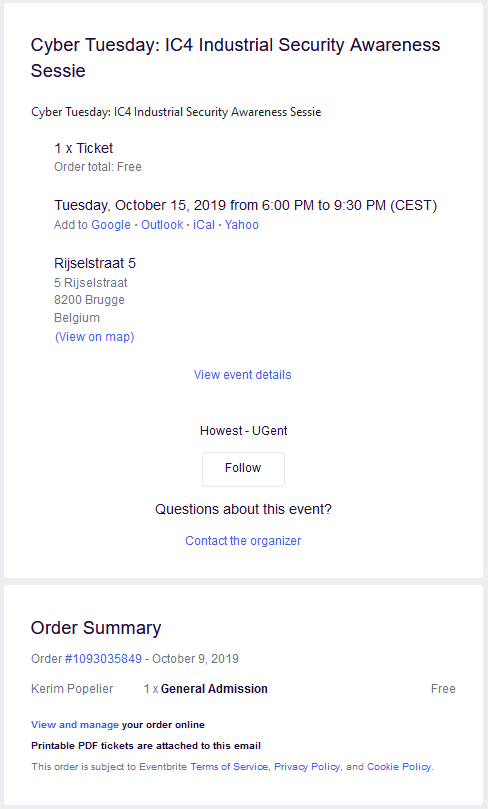

Howest IC4
Date and duration:
15 October 2019
18:00 - 21:30
Proof:

Description
Op 15 October organiseerde het Industrial Control & Communication Competence Center oftewel IC4 een Cyber Tuesday. IC4 is een onderzoeksgroep verbonden aan Howest. Hun doel is om onderzoek uit te voeren binnen het domein van industriële controle, communicatie en cyberbeveiliging.
Het event was een talk en demonstratie van Tijl Deneut. Via 3 "kasten" die een industriele site nabootsen toont hij aan dat heel veel van de apparatuur die gebruikt is in de industrie eigenlijk heel kwetsbaar is voor hackers. Dit was een mooie en interessante talk.